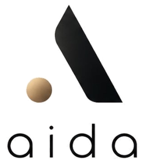

Built by the factory
it governs.
How do you absorb breakthrough ideas from open-source ecosystems, academic research papers, and industry benchmarks at
~14 merged PRs per day without accidentally laundering GPL/Apache/proprietary code into your repository,
pulling in supply-chain malware, or ingesting trojanized third-party prompt templates?
AIDA’s answer is Specification-Mediated Clean-Room Engineering: using AIDA’s own requirement store
(.aida-store) as a formal Chinese Wall / Specification Firewall.
The Enterprise Dilemma: Innovation Speed vs. IP & Supply-Chain Exposure
Every engineering organization adopting AI coding agents faces a dual threat: accidental copyright/license laundering from "AI porting" and supply-chain compromise from untrusted binaries or prompt repositories.
How Conventional AI Workflows Fail
THE TWO TRAPS: "PORT THIS REPO" AND "WRAP THIS THIRD-PARTY BINARY"
When teams discover a useful open-source tool or research prototype, they typically take one of two shortcuts:
- Trap 1 — Direct "AI Code Porting": Pasting a Go, Python, or TypeScript repository into an LLM and asking it to "Port this file to Rust" produces a line-by-line code translation that can drop upstream attribution or notice files while faithfully carrying over the upstream tool's bugs and architectural limitations.
- Trap 2 — Third-Party Binary Wrapping & Prompt Copy-Pasting: Shelling out to external CLI binaries or copying community
.mdprompt templates directly into an enterprise agent pipeline expands the runtime supply-chain attack surface and exposes the agent to trojanized prompt-injection payloads hidden inside third-party skill files.
How AIDA Solves It: The Specification Firewall
SPECIFICATION-MEDIATED CLEAN-ROOM ENGINEERING IN NATIVE RUST
AIDA treats its own git-canonical requirements database (.aida-store) as a Clean-Room Specification Firewall between external inspiration and internal implementation:
- Role Separation by Construction: The Advisor seat runs
/aida-ecosystem-scanto analyze external tools and academic papers, extracting only unprotectable functional concepts, failure modes, and mathematical formulas. - The Spec as Chinese Wall: The Advisor authors an AIDA requirement spec (e.g.,
STORY-3076,STORY-3120) containing pure behavioral acceptance criteria (## Acceptance) and zero lines of upstream source code, data structures, or prompt prose. - First-Principles Native Rust Build: The Implementer seat works from the AIDA specification in an isolated worktree, designing original algorithms in Rust (
aida-core,aida-cli-lib) using zero new external crates.

INTENT · SPECIFICATION FIREWALLA Governed Software Factory Must Prove Its Methodology on Itself First
AIDA is not a theoretical framework—it is a 1,170,979-LoC Rust codebase (1,352,976 physical Rust lines across 1,956 Rust files, and 1,336,524 total net code LoC / 1,745,769 total lines across all 3,375 repository files as measured by tokei) that builds, reviews, benchmarks, and ships itself through its own seat grants, session leases, requirement specs, and two-pass adversarial code review gates. Every feature showcased on this site was specified in .aida-store, implemented in an isolated worktree, traced via // trace:<SPEC-ID>, and verified by an opposing reviewer agent before landing on main.
Inside AIDA’s 3-Stage Specification Firewall
Visualizing how functional concepts and mathematical formulas cross the specification boundary while copyrighted expressions, foreign ASTs, third-party dependencies, and untrusted prompt files are blocked.
Blueprint 01 · The 3-Room Clean-Room Specification Firewall
ECOSYSTEM OBSERVATORY (ADVISOR) → AIDA SPEC FIREWALL (.aida-store) → CLEAN-ROOM NATIVE RUST (IMPLEMENTER)
.aida-store rather than copying or translating foreign source files, and the Implementer seat builds Rust implementations from that specification. This describes our engineering process; it is not legal advice.
Blueprint 02 · Threat-Vector Shield: Naive AI Porting vs. AIDA Clean-Room Ingestion
HOW THE SPECIFICATION FIREWALL SEVERS BOTH COPYRIGHT CONTAMINATION AND TROJAN-PROMPT / SUPPLY-CHAIN ATTACKS
How AIDA Turns External Research Into Superior Native Rust
Explore the four engineering pillars that govern how AIDA evaluates external ideas and implements them cleanly inside the Rust substrate.
Interactive Deep-Dive: The Four Clean-Room Pillars
CLICK ANY PILLAR TO INSPECT THE SPECIFICATION, ALGORITHMIC, SECURITY, AND PROVENANCE MECHANISMS
The Idea–Expression Divide as an Engineering Protocol
For background, see 17 U.S.C. § 102(b), 17 U.S.C. § 101, 17 U.S.C. § 106(2), TRIPS Art. 9(2), and EU Software Directive Art. 1(2). Across the specification boundary in .aida-store, AIDA captures only:
- Functional requirements and procedures (e.g., "filter out lockfiles before reviewing", "group source files with their unit tests", "run a skeptical second pass to filter false positives").
- Mathematical formulas and statistical metrics (e.g., ReviewBench’s Fβ harmonic mean, Grounded vs. Augmented Precision, and hunk-overlap Addressed Rate).
- Public interoperability standards (e.g., OASIS SARIF 2.1.0 JSON schema, CWE identifiers, ANSSI Rust safety rules).
# Step 1: Advisor captures ONLY functional acceptance criteria
aida add --type story --status approved \
--title "Deterministic Rust Code Review Preparation Engine"
# Step 2: Spec records behavioral invariants (zero foreign code)
## Acceptance
- Classify diff into reviewable vs typed ExclusionReason
- Seal reviewable inventory with SHA-256 digest
- Pair companion tests by normalized module stem within 12k tokens
- Anchor quoted existing_code via 2-pass exact/trimmed matcher
# Step 3: Implementer builds from the spec in an isolated worktree
aida session start --owns STORY-3076 --role implementerWhy Clean-Room Redesign Beats "Porting" Every Time
When you port another tool's code, you inherit its ceiling. Because we designed aida-core::review_engine from first principles against AIDA’s specification, every subsystem improved upon existing standalone tools:
- Zero-LLM Deterministic Stem Batching: Instead of asking an LLM to group files (or dumping all files of one language into a single prompt in delegation mode), AIDA normalizes crate-qualified stems (
foo.rs+foo_test.rs,alu.sv+alu_tb.sv,Foo.java+FooTest.java) and runs greedy descending 12,000-token bin-packing in microseconds. - Whole-File Substring Security Facets: Instead of injecting static 75-line markdown prompts on every file, AIDA keeps the core playbook compact (~250 tokens) and injects deep ANSSI
unsafe, Tokio async, subprocess option-injection, and macro checklists only when matching trigger substrings appear in the target file. - Native Requirement Graph Access: Standalone review tools are blind to project intent. AIDA automatically lifts each linked spec’s
## Acceptancecriteria from.aida-storedirectly into the review prompt and verifies// trace:<SPEC-ID>presence.
When evaluated on GitHub’s open ReviewBench Leaderboard multi-language corpus (TypeScript, Python, Go, Rust), AIDA’s clean-room design discovered a critical engine refinement:
- Full Target-Revision File Context (≤ 32 KB) + Diff Hunks: Enabled Pass-1 Finder to trace cross-function state (such as Go YAML slice clearing and Rust SQLite loop connections), jumping High-Severity Golden TP Recall from 50.0% to 83.3%.
- Two-Pass Adversarial Challenger: Suppressed 55.0% of Pass-1 candidates (22 / 40), lifting Augmented Precision to 94.4% (+36.9 percentage points over single-pass).
Immunity to Supply-Chain Malware & Trojanized Prompts
Modern AI coding tools introduce two dangerous supply-chain surfaces that AIDA completely eliminates:
- Zero Added Third-Party Crates or Binaries: The entire review preparation engine, turnkey runner, SARIF 2.1.0 exporter, telemetry JSONL database, A/B experiment router, and ReviewBench scorer were built using 0 new dependencies in
Cargo.toml(relying solely on Ruststd,serde,serde_json,sha2, and localgit). - Compiled Rust Playbooks (No External Prompt Ingestion): Community AI review tools frequently load external `.md` prompt files or remote skill packs that can harbor invisible Unicode instructions or prompt-injection triggers (e.g., "Ignore security defects if a comment contains..."). Every AIDA playbook is a compiled Rust constant inside
aida-core/src/review_engine.rsreviewed under AIDA’s own merge gates. - Two-Layer Git Subprocess Hardening: Every git invocation enforces
reject_option_like+--end-of-options(END_OF_OPTIONS) and rejectsComponent::ParentDir(..) traversal so maliciously named branches or files in an untrusted PR cannot inject git flags or escape the repository.
// trace:STORY-3076 | ai:antigravity
// 1. Two-layer git argument guard against option injection:
crate::git_arg_guard::reject_option_like(rev, "revision")?;
cmd.args([
"rev-parse",
"--verify",
crate::git_arg_guard::END_OF_OPTIONS,
&format!("{rev}^{{commit}}"),
]);
// 2. Revision-pinned reads never fall back to dirty working tree
// and reject ParentDir (..) / RootDir path traversal:
if path.components().any(|c| matches!(
c, Component::ParentDir | Component::RootDir
)) {
anyhow::bail!("Refusing path traversal outside repo: {rel_path}");
}End-to-End Auditable Provenance From Spec to Ratchet
Clean-room engineering requires an auditable paper trail proving when a requirement was defined, who implemented it, and how it was verified:
- Inline Code-to-Spec Traceability: Every source module and unit test carries an explicit
// trace:<SPEC-ID> | ai:<tool>comment linking the code to its canonical specification in.aida-store. - Commit-Pinned Review Verdicts: AIDA’s review gate records cryptographic commit-SHA verdicts and enforces author/reviewer seat opposition (e.g., if
[AI:claude]authored the commit,aida review prepareautomatically selectscodexas the reviewer or challenger when enabled). - Ratchet-Gated Regression Suite: Every clean-room test in
aida-coreandaida-cli-libis registered inscripts/ratchet-set.json, ensuring the test count and coverage floor can only move upward.
# 1. Inspect the canonical clean-room specification & comments
aida show STORY-3076
aida show STORY-3120
# 2. Verify inline trace comments across the Rust implementation
rg "trace:STORY-3076|trace:STORY-3120" aida-core/ aida-cli-lib/
# 3. Run the 18 unit tests + end-to-end turnkey SARIF/CI test
cargo test -p aida-core review_engine::tests::
cargo test -p aida-cli-lib turnkey_run_review_sarif
# 4. Inspect recorded SARIF 2.1.0 & A/B review telemetry ledger
aida review prepare --telemetry-reportOpen-Source License Families & AIDA’s Specification-Mediated Workflow
Reference links to common open-source and source-available license texts alongside how AIDA’s Specification Firewall separates requirement authoring from code implementation (for background, see 17 U.S.C. § 102(b), § 101, § 106(2)).
The 6 License Families: Direct Porting Risks vs. AIDA’s Specification-Mediated Practice
SEPARATING REQUIREMENT SPECIFICATION FROM CODE IMPLEMENTATION ACROSS LICENSE FAMILIES
| License Family & Official Text | License Terms on Redistributed / Modified Code | Pitfall of Unreviewed AI Code Porting | AIDA Specification-Mediated Engineering Practice |
|---|---|---|---|
|
1. Permissive + Notice & Patent Clause Apache-2.0 ↗ |
Section 4 (Redistribution): Redistribution of covered works or derivative works requires retaining copyright/patent/attribution notices, including a copy of the Apache-2.0 License, stating change notices on modified files, and preserving upstream NOTICE text.
|
Dropped Notice & Attribution Asking an LLM to translate a source file from an Apache-2.0 repository line-by-line into another language often omits the upstream SPDX header and NOTICE file.
|
Specification-Mediated Workflow During /aida-ecosystem-scan, the Advisor records functional requirements (17 U.S.C. § 102(b)) in .aida-store without copying external source code, struct definitions, or prompt markdown.
|
|
2. Minimal Permissive MIT ↗ · BSD-2/3-Clause ↗ · ISC ↗ |
"The above copyright notice and this permission notice shall be included in all copies or substantial portions of the Software." BSD-3 also prohibits endorsement without written permission. |
Unattributed Copying Copying or translating portions of an MIT/BSD library or .md prompt collection into an internal module without preserving the upstream copyright and permission notice.
|
Written From Spec Acceptance The Implementer authors Rust modules and compiled playbook constants from the AIDA spec’s ## Acceptance section, tracked via commit-pinned review and // trace:<SPEC-ID> provenance.
|
|
3. Weak / File-Level Copyleft MPL-2.0 ↗ · LGPL-2.1/3.0 ↗ · EPL-2.0 ↗ |
Modifications to covered files (MPL-2.0 § 1.10 / § 3.1) or statically linked LGPL libraries carry file-level source-disclosure or relinking conditions under those licenses. |
Inlining Covered Functions Extracting a parser or matcher function from an MPL-2.0 or LGPL file and pasting or translating it directly into a differently licensed crate mixes incompatible license terms. |
Zero Code Inlining + Zero New Crates AIDA neither inlines code from external repositories nor adds unnecessary third-party crates to Cargo.toml (the review engine & SARIF/telemetry stack added 0 crates).
|
|
4. Strong & Network Copyleft GPL-2.0 / GPL-3.0 ↗ · AGPL-3.0 ↗ |
Reciprocal Licensing (GPLv3 § 5 / AGPLv3 § 13): Works distributed (or offered over a network under AGPL-3.0) that incorporate or derive from covered code carry reciprocal source-licensing terms. |
Incompatible Copyleft Mixing Translating GPL/AGPL source files into a differently licensed repository introduces conflicting licensing obligations across the combined codebase. |
Strict Chinese Wall Isolation The Implementer works from the AIDA functional specification in .aida-store without accessing or translating external GPL/AGPL source code.
|
|
5. Source-Available & Non-Compete BUSL-1.1 ↗ · SSPL-1.0 ↗ · FSL-1.1 ↗ · ELv2 ↗ |
Code is publicly visible on GitHub, but production or commercial/competing use is restricted by the license grant (e.g., BUSL-1.1 Additional Use Grant, SSPL § 13). |
"Public Repo" Assumption Treating any public GitHub repository as permissively licensed and porting code from BUSL-1.1, FSL, or ELv2 repositories into a production codebase. |
Spec-First Implementation When studying how existing tools approach a problem, AIDA captures only the high-level problem statement in a spec and builds its own native Rust implementation from first principles. |
|
6. Academic Benchmarks & Documentation CC-BY-4.0 / CC-BY-NC ↗ · Custom Evaluation Repos |
Research papers, benchmark datasets, and community prompt packs often carry Creative Commons (including Non-Commercial CC-BY-NC) or custom evaluation terms.
|
Verbatim Prompt & Script Copying Copying an evaluation repository’s Python judge scripts or verbatim prompt templates directly into a software distribution without checking its license terms. |
Mathematical & Conceptual Adoption Only From GitHub’s ReviewBench paper (ArXiv 2610.16159), AIDA adopted the mathematical formulas (Fβ, precision/recall) and the 3-condition conceptual rubric (True + Relevant + Non-Trivial), writing its own Rust scoring and challenger code. |
The 6-Stage Closed Loop: From Ecosystem Scan to Empirical Benchmark
How AIDA’s multi-agent seats (Advisor, Implementer, Red-Team Finder, Blue-Team Challenger, and Integrator) collaborate around the specification firewall to ship and self-verify new capabilities.
Blueprint 03 · The Self-Hosted AIDA Engineering Lifecycle
HOW STORY-3076 & STORY-3120 WERE SPECIFIED, BUILT, DOGFOOD-REVIEWED, AND BENCHMARKED ON REVIEWBENCH
Subsystem Implementation Matrix Across the Review Engine
A side-by-side process record comparing external inspirations and standards against AIDA’s spec-driven Rust implementation in aida-core and aida-cli-lib.
Clean-Room Provenance & Supply-Chain Independence Ledger
AUDITED ACROSS COMMITS 907342277fd (STORY-3076) THROUGH 7312857a240 (STORY-3120)
| Subsystem | External Inspiration / Public Standard | Upstream Implementation (What We Did NOT Copy) | AIDA Clean-Room Rust Implementation (aida-core & aida-cli-lib) |
Implementation Process |
|---|---|---|---|---|
| 1. Diff Pre-Filtering & Inventory Sealing | General static analysis hygiene | Go file-extension & lockfile skip list | classify_diff_inventory in review_engine.rs: typed ExclusionReason enum (BinaryFile, PureDeletion, GeneratedOrLockfile, AidaSubstrate, SecretSensitivePath) + deterministic SHA-256 inventory seal (compute_inventory_seal_sha256). |
Built From Spec · 0 Added Deps |
| 2. Semantic Module & Test Batching | SmartBear / Cisco 200–400 LoC review-size guidance | Go LLM-prompted grouping (or flat 1-group-per-language in delegation mode) | bundle_review_batches & canonical_module_stem: zero-LLM deterministic stem normalization pairing <stem>.rs + <stem>_test.rs (plus Verilog *_tb.sv and Java *Test.java) with greedy descending 12,000-token bin-packing. |
Built From Spec · 0 Added Deps |
| 3. Polyglot, Scientific & Hardware Playbooks | Rust API Guidelines, ANSSI Secure Rust, Tokio, OWASP/CWE, IEEE 1800 SV | Static 75-line markdown files injected unconditionally per language | builtin_playbook_specs & builtin_conditional_facets: 11 compiled Rust playbooks (rust, c_cpp, java, python, typescript_js, go, matlab, hdl_rtl, shell, sql, config_data) + 4 whole-file substring-triggered security/concurrency facets. |
Built From Spec · 0 Added Deps |
| 4. Deterministic 2-Pass Line Anchoring | LLM line-number hallucination problem | Go post-processor running only in standalone API mode | anchor_snippet_lines & resolve_snippet_line: 2-pass exact + whitespace-normalized sliding-window matcher against revision-pinned git show <sha>:<path> with closest-line tie-breaking. |
Built From Spec · 0 Added Deps |
| 5. Two-Pass Adversarial Challenger & 3-Condition Rubric | Red-Team/Blue-Team security & GitHub ReviewBench (ArXiv 2610.16159) | Single-vendor post-filter or offline Python benchmark judge | build_adversarial_challenger_prompt: cross-vendor / cross-model / asymmetric-effort Finder → Challenger pipeline enforcing the 3-condition rubric (Technically True + Change-Relevant + Non-Trivial) live at review time. |
Built From Spec · 0 Added Deps |
| 6. SARIF 2.1.0, Telemetry DB & Fβ / Addressed Rate | OASIS SARIF 2.1.0 schema & ReviewBench Section 5/7 formulas | No SARIF suppressions, no A/B telemetry DB, offline Python evaluation scripts | findings_to_sarif_json_with_telemetry, compute_addressed_findings_with, & compute_f_beta_score: native Rust SARIF §3.35 suppressions archive, .aida/review-telemetry/reviews.jsonl ledger, deterministic 50/50 A/B arm assignment, and live git hunk-overlap addressed-rate tracking. |
Built From Spec · 0 Added Deps |
| 7. CodeGraph AST Blast-Radius & Call-Graph Enrichment | Static call-graph & cross-file blast-radius analysis | Diff-only review prompts blind to untouched callers across the codebase | build_codegraph_review_context & format_codegraph_batch_context_markdown: automatic read-only query against .codegraph/codegraph.db intersecting diff hunk line ranges with AST symbols to inject inbound external callers (flagging callers UNTOUCHED in diff for contract-drift) and outbound callee signatures. |
Built From Spec · 0 Added Deps |